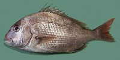

まだい（真鯛）の漁獲量
いちばん多くとれる都道府県
まだいが日本でいちばん多くとれるのは長崎県です。1,848 tで、全国（1万4,706 t）の13%を占めます。

| 順位 | 都道府県 | 漁獲量 | 全国に占める割合 |
|---|---|---|---|
| 1位 | 長崎県 | 1,848 t | 13% |
| 2位 | 兵庫県 | 1,820 t | 12% |
| 3位 | 福岡県 | 1,519 t | 10% |
この数字について
- 分類：鯛の仲間
- 全国の漁獲量：1万4,706 t
- この数字が表すもの：漁獲量（海でとれた重さ。養殖は含みません）
- 調査：海面漁業生産統計調査（海面漁業） 令和5年
- 38県分を調査（調査していない県は順位に入りません）